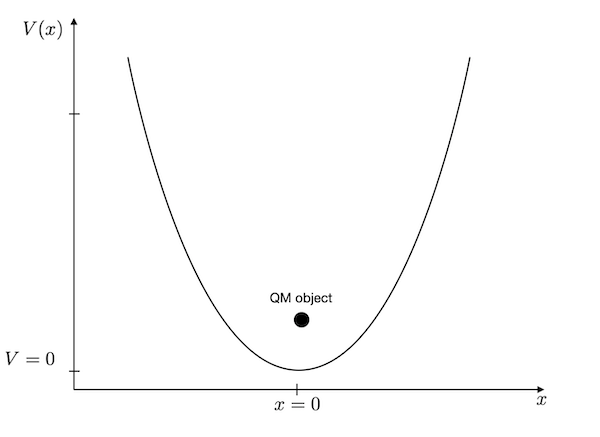
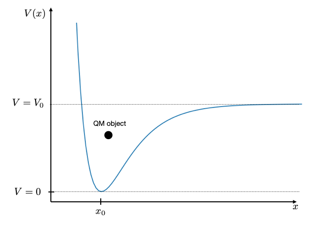

Harmonic Oscillator
The harmonic oscillator is certainly one of the working horses of physics. In quantum mechanics, it resembles to be a good model for the motion of two bound atoms, i.e. bond vibrations, which are of relevance for al types of molecules and solids.
As compared to the particle in a box, we have to change the potential in the Hamilton operator to solve the harmonic oscillator. The potential energy of the harmonic oscillator is given as
\[\begin{equation} V(x)=\frac{k}{2}x^2 \end{equation}\]
where \(k\) is the spring constant and \(x\) is the deviation from its minimum potential energy position. For an atomic bond between carbon and oxygen, for example, the spring constant corresponds to \(k=396\) N/m.

The C=O bond has a bond length of \(x_{0}=1.229\mathring{A}\), so we do not have to look at a large domain. A region of \(L=1 \mathring{A}\) provides already an energy change by 3 eV.
Definition of the problem
Before we start, we need to define some quantities:
- we will study a domain of L=1 Angström
- we will use N=1001 points for our \(x_{i}\)
- the spring constant shall be \(k=396\) N/m
- we will use the mass of the carbon atom
Potential energy
We first define the diagonal potential energy matrix.
Kinetic energy
Next are the derivatives of the kinetic energy matrix.
An finally the total Hamilton operator matrix again.
Solution
The last step is to solve the system of coupled equations using the eigsh method of the scipy module again.
Plotting
Theory
The quantum harmonic oscillator is one of the few quantum systems that can be solved exactly analytically. The energy eigenvalues are given by:
\[\begin{equation} E_n = \left(n + \frac{1}{2}\right)\hbar\omega \end{equation}\]
where \(n = 0, 1, 2, \ldots\) is the quantum number and \(\omega = \sqrt{k/m}\) is the angular frequency of the oscillator.
The corresponding wavefunctions are:
\[\begin{equation} \psi_n(x) = \left(\frac{\alpha}{\pi}\right)^{1/4}\frac{1}{\sqrt{2^n n!}}H_n(\sqrt{\alpha}x)e^{-\alpha x^2/2} \end{equation}\]
where \(\alpha = \frac{m\omega}{\hbar}\) is a parameter that determines the width of the wavefunction, and \(H_n\) are the Hermite polynomials. The ground state (\(n=0\)) has a Gaussian shape, while higher states show increasingly complex oscillatory behavior with exactly \(n\) nodes.
Implementation
Below we plot the analytical results:
Energies of the states
The diagram above, shows that the energy values in the harmonic oscillator model are equally spaced. The horizontal dashed line corresponds to the thermal energy at 300 K temperature (\(E_{th}=0.026\) eV). The bond length changes \(x\) are pretty small as compared to the actual bond length.
The analytical solution of the harmonic oscillator shows energy states at
\[\begin{equation} E_{n}=\left (n+\frac{1}{2} \right )\hbar \omega \end{equation}\]
where \(n\) is the quantum number running from \(0,\ldots,\) and \(\omega\) is the frequency of the bond vibration, i.e. \(\omega=\sqrt{k/m}\). The graph below compares the
Where to go from here?
Bond potentials between atoms are typically not parabolic. They are anharmonic. You see that for example in the thermal expansion of materials. A more appropriate description of such bond potentials is the Morse potential
\[\begin{equation} V(x)=V_{0}\left (1-e^{-\alpha(x-x_0)}\right)^2 \end{equation}\]
The shape of this potential is shown below with a value of \(x_{0}=3\), \(\alpha=1\) and \(V_{0}=10\). When the energy in the bond is larger than the value \(V_{0}\), the molecule will dissociate.

If you are interested, try to find paramaters for ea real world example and the Morse potential and simulate the wavefunction and energy values and observe, for example, if the energy values are still equidistant or not.
Where to go from here?
- Periodic potential: Create a series of wells to model a crystal lattice
- Time evolution: Use the time-dependent Schrödinger equation to watch wave packets evolve
- 2D problems: Extend to two dimensions for quantum dots or 2D boxes